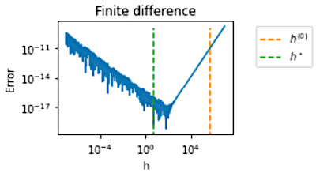

numericalderivative documentation¶
{kind=link}
numericalderivative is a module for numerical differentiation.
The goal of this project is to compute the first derivative of a function using finite difference formulas. The difficulty with these formulas is that it must use a finite difference step which must be neither too large (otherwise truncation error dominates the error) nor too small (otherwise condition error dominates). To solve this issue, the module provides algorithms to compute an approximate optimal finite difference step.
Furthermore, this package provides benchmark problems for numerical differentiation.
Documentation about numericalderivative can be found here
User documentation¶
- User manual
- Algorithms
- Finite Differences
- Benchmark problems
- numericalderivative.DerivativeBenchmarkProblem
- numericalderivative.InverseProblem
- numericalderivative.ExponentialProblem
- numericalderivative.LogarithmicProblem
- numericalderivative.SquareRootProblem
- numericalderivative.AtanProblem
- numericalderivative.SinProblem
- numericalderivative.ScaledExponentialProblem
- numericalderivative.GMSWExponentialProblem
- numericalderivative.BuildBenchmark
- numericalderivative.SXXNProblem1
- numericalderivative.SXXNProblem2
- numericalderivative.SXXNProblem3
- numericalderivative.SXXNProblem4
- numericalderivative.OliverProblem1
- numericalderivative.OliverProblem2
- numericalderivative.OliverProblem3
Examples¶
References¶
Gill, P. E., Murray, W., Saunders, M. A., & Wright, M. H. (1983). Computing forward-difference intervals for numerical optimization. SIAM Journal on Scientific and Statistical Computing, 4(2), 310-321.
Adaptive numerical differentiation. R. S. Stepleman and N. D. Winarsky. Journal: Math. Comp. 33 (1979), 1257-1264
Dumontet, J., & Vignes, J. (1977). Détermination du pas optimal dans le calcul des dérivées sur ordinateur. RAIRO. Analyse numérique, 11 (1), 13-25.